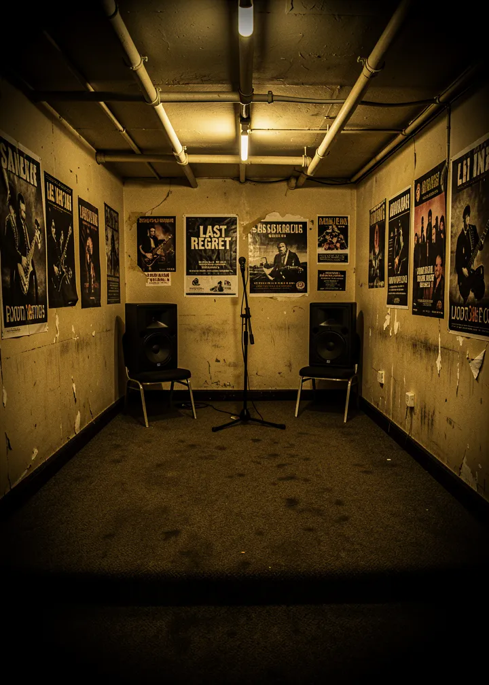
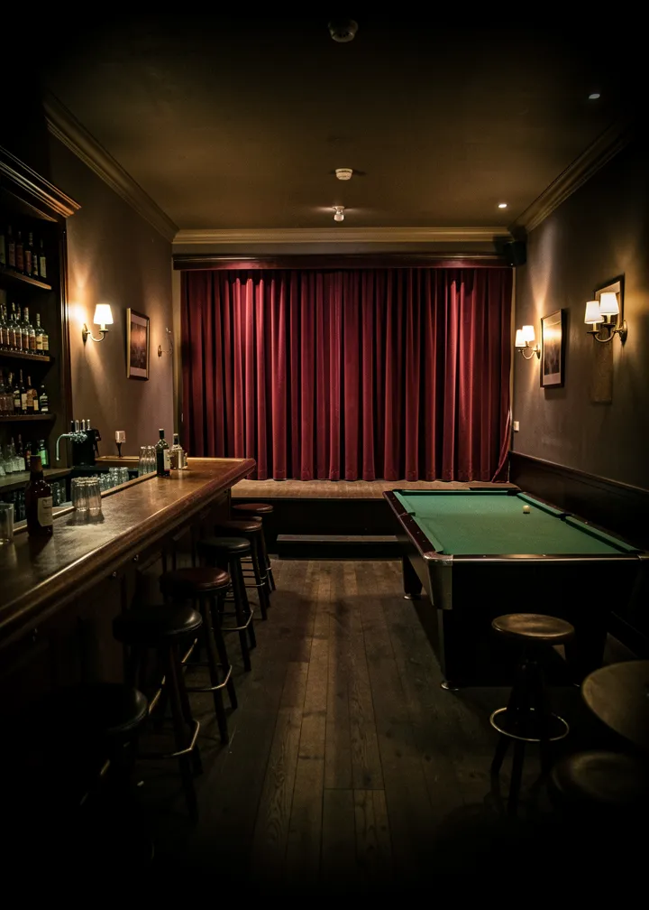
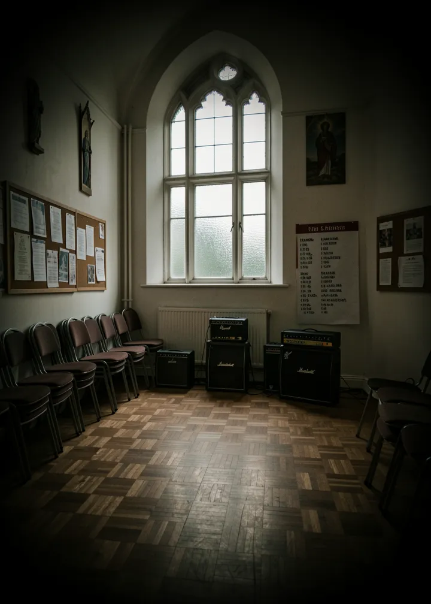
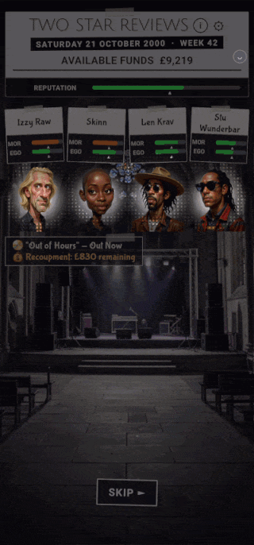
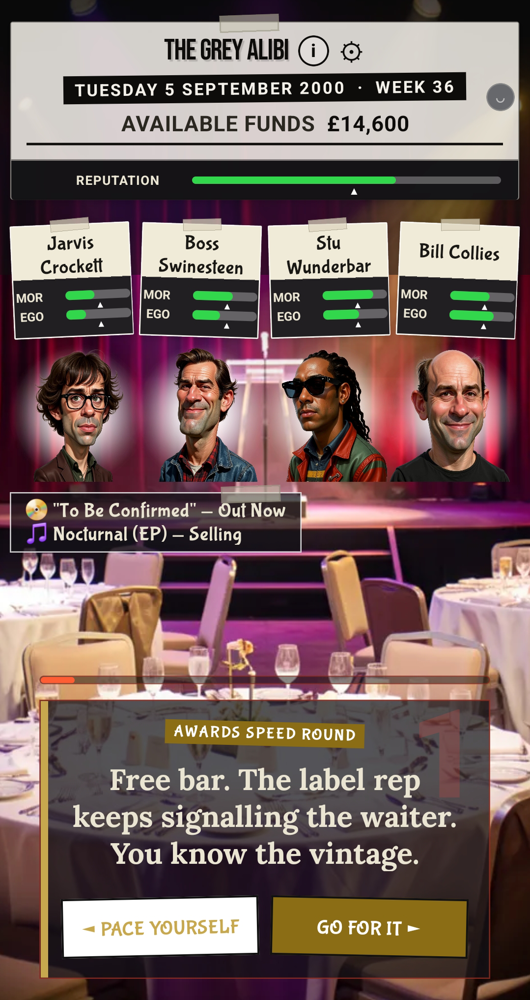
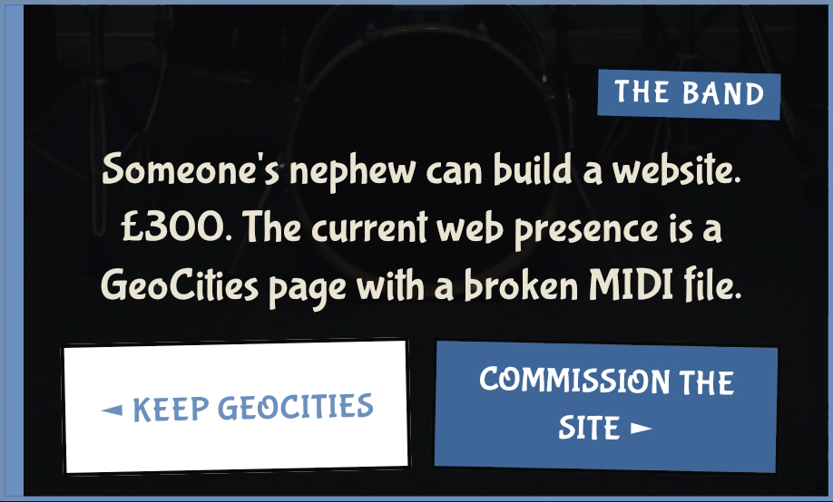
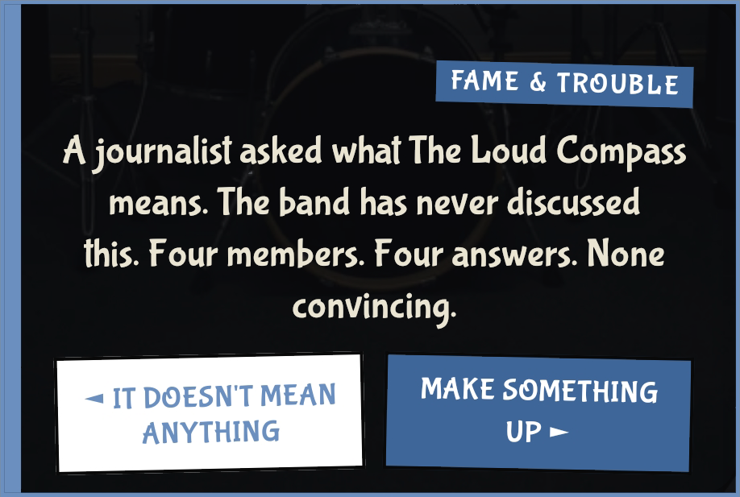

NO. 2 · JAN 2000
Reigns meets Rockstar Ate My Hamster
Card-swipe band management. British indie, early 2000s. Demo tapes, sticky floors, no social media or smartphones.
CLIPHOOK — GIG NIGHT
stage lights mid-sweep over the venue, BOX 1 on top
screenshots/deck/hook-gig-night.gif
stage lights mid-sweep over the venue, BOX 1 on top
screenshots/deck/hook-gig-night.gif

SCREENSHOTHOOK — GAMEPLAY + HUD
full paper HUD over a card (awards full-HUD stand-in)
screenshots/deck/hook-story-card.png
full paper HUD over a card (awards full-HUD stand-in)
screenshots/deck/hook-story-card.png



ACTUAL CARDS. EVERY DECISION LOOKS LIKE THIS.